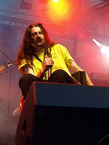
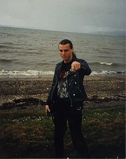

History
English extreme metal band Venom , from Newcastle, crystallized the elements of what later became known as thrash metal, death metal and black metal, with their first two albums Welcome to Hell[18] and Black Metal,[19] released in late 1981 and 1982, respectively. Their dark, blistering sound, harsh vocals, and macabre, proudly Satanic imagery proved a major inspiration for extreme metal bands.[20] Another highly influential band, Slayer, formed in 1981. Although the band was
Possessed, a band that formed in the San Francisco Bay Area during 1983, is described by Allmusic as "connecting the dots" between thrash metal and death metal with their 1985 debut album, Seven Churches.[26] While attributed as having a Slayer influence,[27] current and former members of the band had actually cited Venom and Motörhead, as well as early "the likes of Trey Azagthoth and Morbid Angel based what they were doing in their formative years on the Possessed blueprint laid down on the legendary Seven Churches recording.

Possessed arguably did more to further the cause of 'Death Metal' than any of the early acts on the scene back in the mid-late 80's." During the same period as the dawn of Possessed, a second influential metal band was formed in Orlando, Florida. Originally called Mantas, Death was formed in 1983 by Chuck Schuldiner, Kam Lee, and Rick Rozz. Inspired by the Brandon, Florida act Nasty Savage, they took the sound of Nasty Savage and deepened it.[33] In 1984, they released

Death's 1987 debut release, Scream Bloody Gore, has been described by About.com's Chad Bowar as being the "evolution from thrash metal to death metal",[35] and "the first true death metal record" by the San Francisco Chronicle.[36] In an Interview Jeff Becerra talked about the discussions of
Growing popularity
By 1989, many bands had been signed by eager record labels wanting to cash in on the subgenre, including Florida's Obituary, Morbid Angel and Deicide.[40] This collective of death metal bands hailing from Florida are often labeled as "Florida death metal". Morbid Angel pushed the genre's limits both musically and lyrically, with the release of their debut album Altars of Madness in 1989.[41][42] The album "redefined what it meant to be heavy while influencing an upcoming class of brutal death metal."[43]
Later history
Death metal's popularity achieved its initial peak during 1992–1993, with some bands such as Morbid Angel and Cannibal Corpse enjoying mild commercial success. However, the genre as a whole never broke into the mainstream. The genre's mounting popularity may have been partly responsible for a strong rivalry between Norwegian black metal and
Blackened death-doom
Blackened death-doom is a microgenre that combines the slow tempos and monolithic drumming of doom metal, the complex and loud riffage of death metal and the shrieking vocals of black metal.[59] Examples of blackened
Venomdeath-doom bands include Morast,[59] Faustcoven,[59] The Ruins of Beverast,[59] Bölzer,[59] Necros Christos,[59] Harvest Gulgaltha,[60] Dragged into Sunlight,[61] Hands of Thieves,[62] and .[63][64]
HandsSoulburn